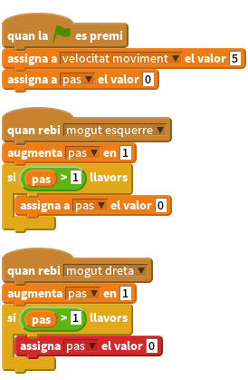
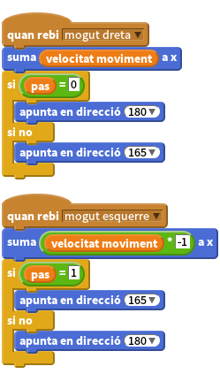

Llista de tasques
- Utilitzant dos objectes cama podem fer que sembli que el monstre camini. Per fer això, necessitem assignar una variable que s’intercanviï entre els dos estats, un perquè la cama es balancegi cap endavant i l’altre perquè es balencegi cap enrere (i caldrà que invertim aquests estats per l’altra cama).
Primer de tot, necessitem assignar la variable pas, llavors cada vegada que rebem envia a tots ‘mogut’, incrementarem un punt la variable. Si la variable és més gran que 1 (podem fer-ho utilitzant l’operador més gran que >) la tornarem a posar a zero.

- Ara podem fer que les cames pivotin quan comprovin l’estat de la variable
pas. Quan la variable estigui a zero podem canviar la direcció de la cama (aquí hem utilitzat una direcció fixadireccióper parar les cames si es tornen boges quan la variable angle no funcioni, però potser ja us estarà bé que el monstre ho faci!).
No hem d’oblidar moure les cames conjuntament amb el moviment del cos utilitzant la variable velocitat moviment.

Podeu utilitzar el mateix grup d’accions per fer que els braços es moguin com onades o bateguin com si fossin ales d’ocell.